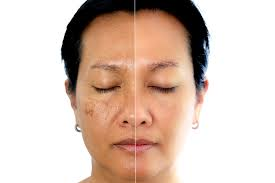

Plix Represents Pineapple Serum
.webp)
* Use of Plix's Pineapple De-pigmentation Dewy Serum can help you get brighter, radiant, clearer, and younger-looking skin.
Treat Pigmentation and Dark Spots: Discover a brighter complexion with 10% Niacinamide and 2% Alpha Arbutin
that reduces hyperpigmentation, dark spots, and discoloration from your skin.
Features & Details
* Treat Pigmentation and Dark Spots: Discover a brighter complexion with 10% Niacinamide and 2% Alpha Arbutin
that reduces hyperpigmentation, dark spots,
and discoloration from your skin.
* Get an Even Skin Tone: 10% Niacinamide helps even out your skin tone and brightens your complexion
so you have radiant skin.
* Reduce Acne Marks: The serum aims to improve the strength of your skin barrier by supporting the reduction of excessive sebum secretion.
This helps reduce enlarged skin pores, skin irritation, and acne scars.
* Lightweight Serum: It spreads and absorbs effortlessly into the innermost layers of the skin thanks to its lightweight texture.
It is vegan, paraben-free, and 100% suitable for all types of skin.
* How To Use: Apply 2 to 3 drops of serum to clean, dry skin, and dab with fingertips in a circular motion & spread it all over your face.
Use it in your P.M. regime for the first week and then use it in your A.M. & P.M. regime after cleansing & toning.
Why Plix Pineapple Serum

Fades Pigmentation
Clinically backed to reduce pigmentation within
4-6 weeks of use

Dark Spot Removal
Visibly decreases the intensity of dark spots
caused by melasma
Brighter & Even-Toned Skin
Infused with activities that promote vibrant & a
uniform skin tone
Click on buy now to purchase serum !